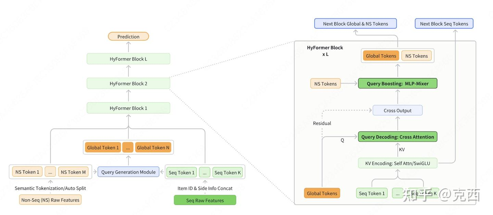
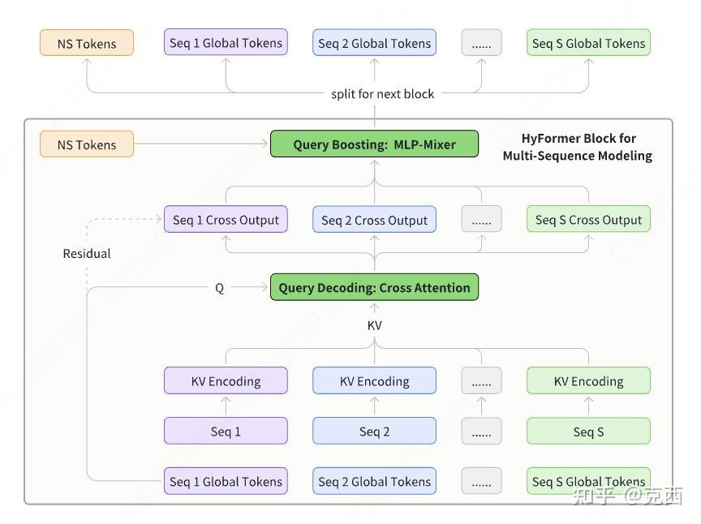
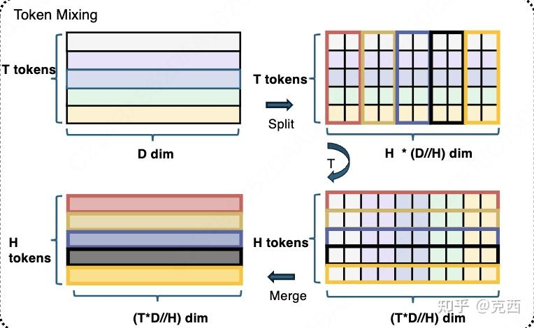
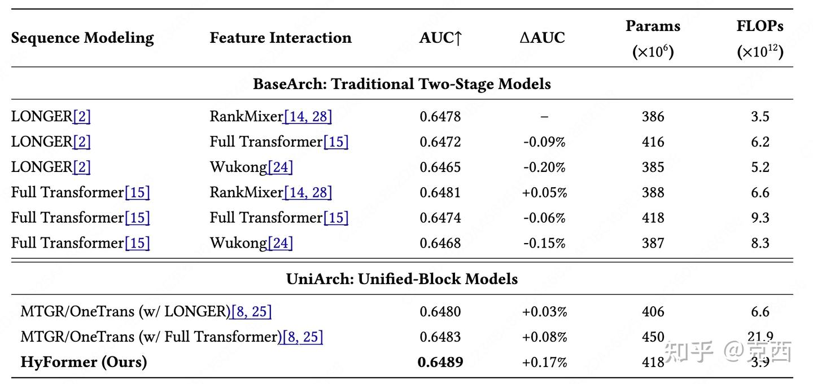
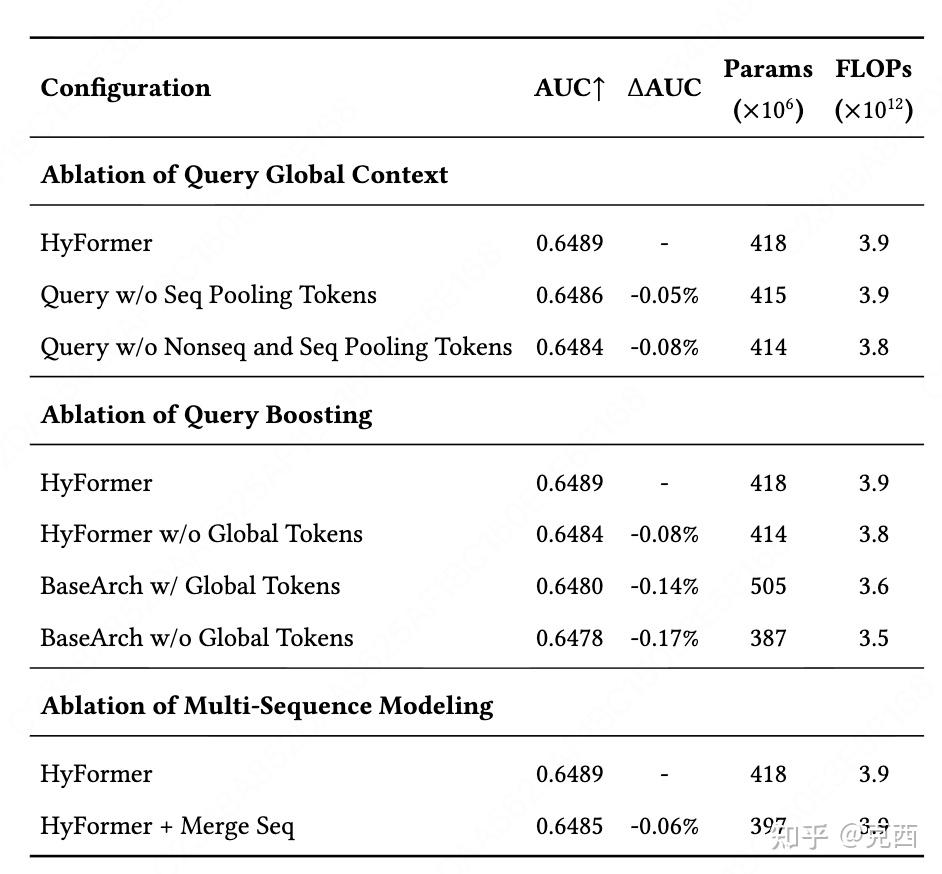
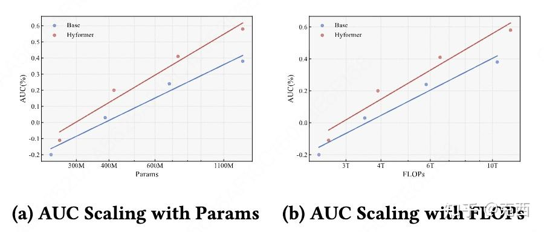
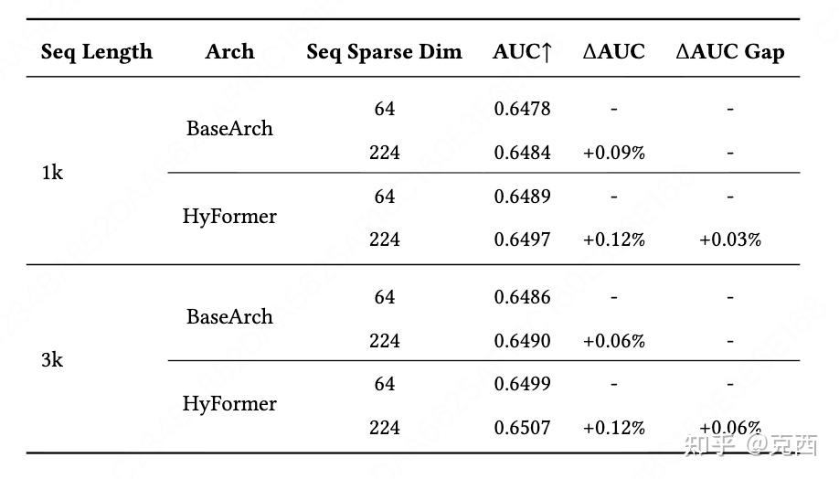

一、背景
在HyFormer之前，工业推荐模型的主流范式可以概括为：原始特征 → 序列建模（压缩）→ 特征交互（融合）→ 输出
其中序列建模的代表有 LONGER（通过交叉注意力压缩长序列）、SIM（搜索兴趣网络）等；特征交互的代表有 RankMixer（基于MLP-Mixer的Token混合）、DCN V2（深度交叉网络）等。
这种解耦架构的直观优点是模块清晰、易于替换。但作者通过大量实验发现，这种单向信息流限制了模型的表达能力。例如，在特征交互阶段，如果希望从序列中再次提取某些信息，由于序列已经被压缩，只能使用压缩后的固定表示，无法“回头看”原始序列。此外，当引入多个异构序列（如搜索序列+观看序列）时，简单合并会破坏各自的语义结构。
HyFormer的核心洞察：序列建模和特征交互不应该被割裂，而应该在同一模型内部交替进行、相互增强。基于这一思想，他们设计了统一架构，通过“Global Token”作为桥梁，让序列信息与特征交互实现双向流动，这一点也是OneTrans所提到的。
二、HyFormer总体设计

HyFormer的整体架构如上图所示：
- 输入侧：包括两类数据
- 非序列特征（NS Tokens）：用户画像、上下文、候选物品等。
- 多个行为序列（Seq1, Seq2, …, SeqS）：例如搜索历史、观看历史，每个序列长度可能不同。
- 处理流程：堆叠多个HyFormer层，每一层包含两个核心模块：
- Query Decoding：用Global Token对序列进行目标导向的解码。
- Query Boosting：用轻量级Token混合加强Global Token之间及与非序列特征的交互。
- 输出：最后一层的输出送入下游MLP得到CTR预估。
Global Token是由非序列特征和序列的池化信息生成的多个可学习向量，它们既是解码时的查询，也是增强时的对象，在层间传递并不断演化。
三、核心模块
3.1 Query Generation
在输入层，我们需要初始化第一层的Global Token。生成方式如下：
- 将所有非序列特征向量拼接，并对每个序列做均值池化得到序列摘要。
- 将拼接后的“全局信息”输入N个轻量级FFN，得到N个Global Token。
Global_Info = Concat(NS_Tokens, MeanPool(Seq1), MeanPool(Seq2), ...)
Q = [FFN_1(Global_Info), FFN_2(Global_Info), ..., FFN_N(Global_Info)]
为什么需要多个Global Token？？？
因为序列中的信息是多维的（比如兴趣点、时间衰减、上下文相关性），多个Token可以捕获不同的语义子空间，类似于Multi-Head Attention的Query头。
在深层HyFormer层中，不再重新生成Global Token，而是直接使用上一层的输出作为本层的查询，实现逐层语义精炼。
3.2 Sequence Representation Encoding
对于每个序列，HyFormer支持三种编码策略，以适应不同的效率需求：
- Full Transformer：标准Transformer编码器，高容量，适合离线训练。
- LONGER-style：用紧凑序列（short sequence）作为查询，与原始序列做交叉注意力，复杂度从O(L²)降至O(L_short * L)。
- Decoder-style：仅用轻量级MLP（SwiGLU）变换，无注意力，极致低延迟。
每层的KV都是独立计算的：即第l层的序列表示由第l层的编码器生成，而非复用之前层的输出。这让序列表示能随着层数加深而演化，与查询解码深度耦合。
3.3 Query Decoding
解码过程非常简单：将本层的Global Token作为查询，与对应序列的KV进行多头交叉注意力，得到解码后的查询向量。
Q_decoded = CrossAttention(Q, K, V)
对于多序列场景，每个序列独立进行解码。例如，Seq1的Global Token只与Seq1的KV做交叉，Seq2的Global Token只与Seq2的KV做交叉。这种序列独立解码的设计至关重要：它保留了不同序列的语义特性，避免了强制合并带来的信息混淆。

每个序列独立解码后，所有解码输出与非序列Token一起送入统一的Query Boosting模块。
3.4 Query Boosting
解码后的查询虽然携带了序列信息，但它们之间以及与非序列特征之间还没有充分交互。Query Boosting模块正是为此设计，它采用MLP-Mixer风格的Token混合（RankMixer的核心思想），以极低的计算代价实现跨Token信息融合。

Token混合的具体过程：
- Split：假设有T个Token（包括所有解码输出和非序列Token），每个Token维度为D。将每个Token沿特征维均匀分成H份，每份维度D/H。这里设置H = T（Token数量），以保证后续维度匹配。
- 跨Token拼接：对于每个子空间索引h（1..H），收集所有Token的第h份，拼接成一个长度为T·(D/H)的向量。
- 子空间变换：对每个拼接后的向量施加一个MLP（通常为两层线性+非线性），输出维度保持不变。
- Merge：将变换后的H个向量重新拆解为T个Token的各个子空间，并按原顺序拼接回维度D，得到增强后的Token。
由于Split和Merge是对称操作，整个模块可视为对Token集合的一种置换等变变换，等价于在特征维度和Token维度上交替进行信息混合。
为什么设置H = T？ 因为当H = T时，每个子空间拼接后的向量长度正好为D（因为T·(D/T) = D），无需额外维度调整，便于堆叠和残差连接。
增强后的Token再经过一个逐Token的FFN进行细化，最后加上残差连接：
X_boosted = X + PerTokenFFN( X' )
四、实验与结果
4.1 数据集与基线
- 数据集：抖音搜索真实日志，70天共30亿样本，包含长周期序列（最长3000）、搜索序列和Feed序列。
- 基线模型：
- 传统两阶段：LONGER+RankMixer、FullTransformer+Wukong等。
- 统一架构：MTGR、OneTrans（MTGR简化版）。
4.2 实验对比

HyFormer在相同参数量和FLOPs下取得最高AUC，且显著优于统一架构MTGR/OneTrans。这说明简单的统一并不能带来收益，关键是要设计合理的双向交互机制。
4.3 消融实验

- Global Token重要性：去除序列池化或非序列特征生成查询，AUC下降0.05%~0.08%。
- Query Boosting必要性：移除Token混合模块，AUC下降0.08%；而将HyFormer退化为传统两阶段架构（BaseArch w/o Global Tokens）下降0.17%。
- 多序列独立解码：将多个序列合并（如MTGR做法）导致AUC下降0.06%，验证了独立解码的有效性。
4.4 缩放分析

- 参数/FLOPs：随着模型规模从200M增长到1B+，HyFormer的AUC提升斜率明显陡于基线，说明其更能有效利用新增计算资源。

- 序列侧信息维度：增加序列的稀疏维度（从64维扩展到224维，引入更多特征），HyFormer的增益比基线大0.03%~0.06%，且序列越长优势越明显。这是因为HyFormer能通过Global Token和双向交互，更充分地利用丰富的信息。
4.5 在线A/B测试
在抖音搜索平台上线后，HyFormer相比线上RankMixer基线取得显著提升：
- 人均观看时长：+0.293%
- 视频完播次数：+1.111%
- 查询改写率（负向指标）：-0.236%
这些指标直接反映了用户体验的提升。
五、总结
HyFormer的贡献：
- 统一的双向优化架构：将序列建模与特征交互融合在一个模型中，通过交替的解码与增强实现信息双向流动，打破了传统解耦设计的限制。
- 高效的Token混合机制：引入MLP-Mixer风格的Token混合，以线性复杂度实现跨Token交互，适合工业级低延迟要求。
- 灵活的多序列建模：每个序列独立解码，保留语义特性，支持为重要序列分配更多Global Token，提升了建模精度。